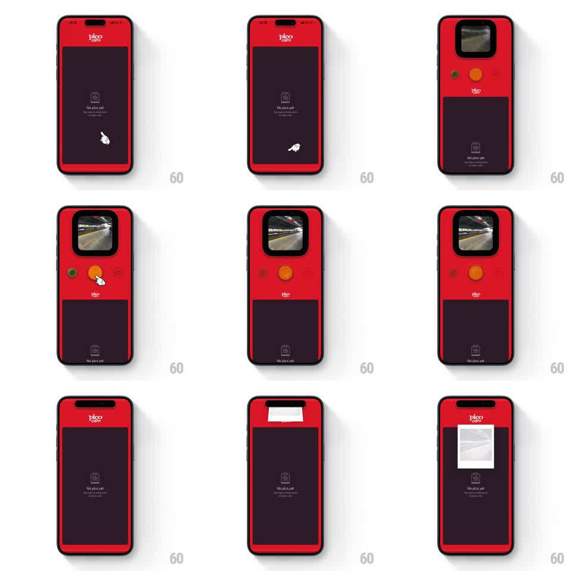

Media
Frame-by-frame

Rebuild this interaction 1:1: Pico Cam's pull-down camera - dragging down from the notch pulls a skeuomorphic red camera out of the top edge with a live viewfinder and chunky shutter button; tapping the shutter snaps a photo, the camera retracts, and a polaroid print ejects from the notch slot.

Rebuild this interaction 1:1: Pico Cam's pull-down camera - dragging down from the notch pulls a skeuomorphic red camera out of the top edge with a live viewfinder and chunky shutter button; tapping the shutter snaps a photo, the camera retracts, and a polaroid print ejects from the notch slot.
## Integration
Integration: stack-agnostic spec - springs given as stiffness/damping, timed motions as duration + curve; map every value to your framework and animation library of choice.
## Scene
Dark photo gallery ("No pics yet") wrapped in a red camera-body frame with the Pico logo. Hidden above the notch: the camera module - rounded viewfinder window, orange shutter button, small green indicator dot. After capture: a white polaroid frame that ejects and develops.
## Motion spec
Pattern: pull-down reveal, capture flash, retract, polaroid eject.
- Pull-down: the camera module slides out from the top tracking the finger 1:1 with rubber-band resistance past ~30% drag; release past threshold snaps it open (spring ~300/24, 300ms), below threshold it snaps shut.
- Viewfinder image fades in (200ms) with a live feed look; the indicator dot blinks on (500ms cycle).
- Shutter tap: the button depresses (scale 0.9, 100ms), a white flash fills the viewfinder (120ms), and the captured frame freezes.
- The module retracts upward (350ms, ease-in) and the polaroid ejects from the notch slot (translate -100% -> 0, 500ms, ease-out), starting as a blank white print.
- The print develops: photo fades through milky to full contrast over ~2.5s.
## Calibration
- The pull must feel mechanical - resistance, then a satisfying snap.
- Ejection comes from the physical slot, not screen center.
## Reduced motion
Camera slides open/closed without rubber-banding; polaroid crossfades to developed (400ms).
## Don't miss
- The red body frames the whole screen - the camera is the device, not a modal.
- The developing polaroid stays on the gallery screen where it ejected.